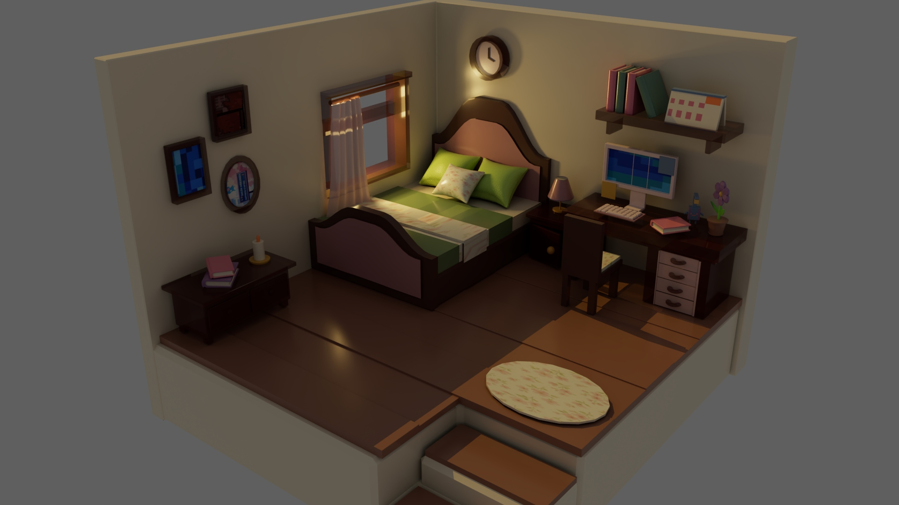
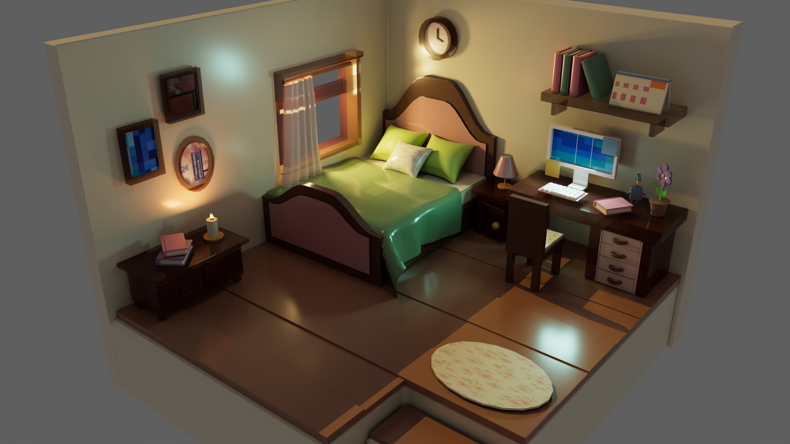
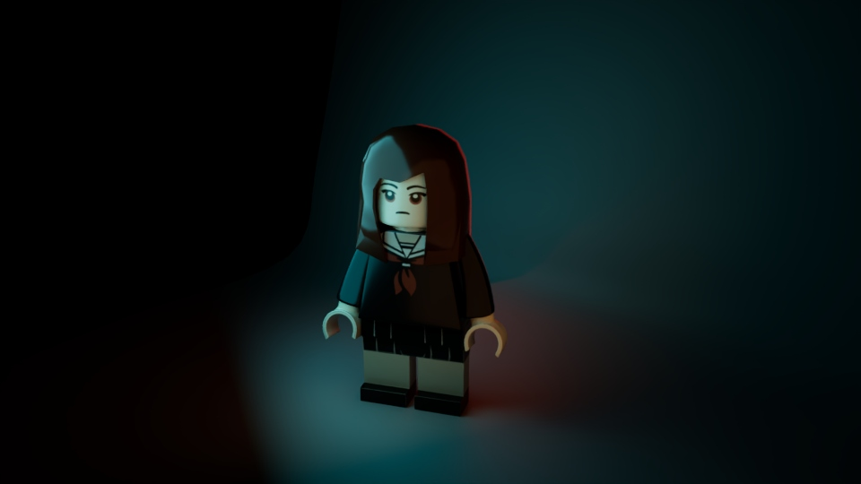
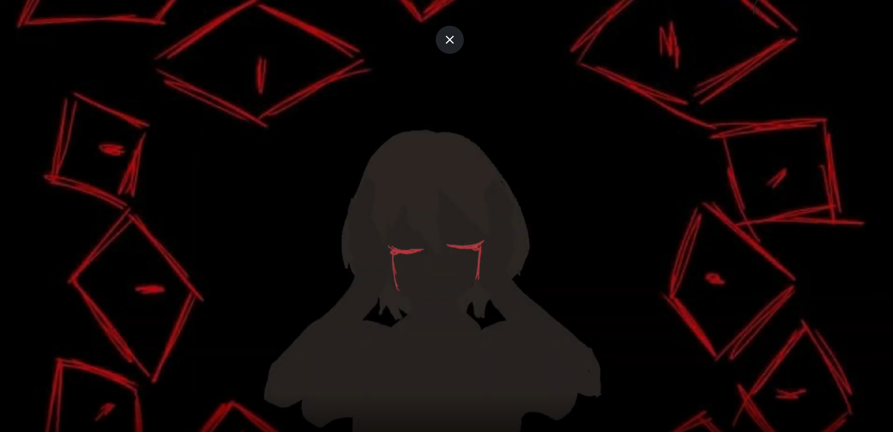
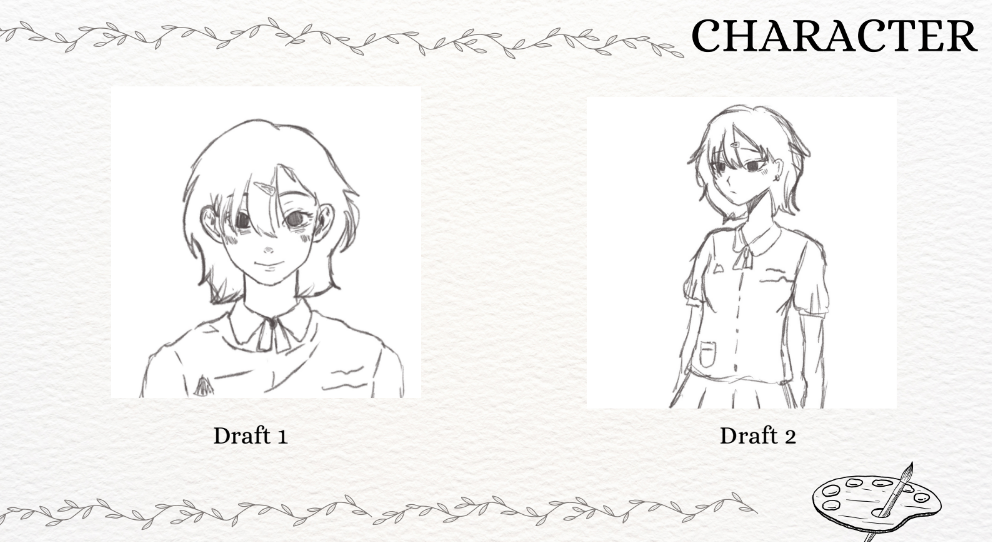

My Projects
รวมผลงานที่เคยทำจากการเรียนและโปรเจกต์ด้าน 3D Modeling และ Animation
3D Room Modeling


โปรเจกต์นี้เป็นการสร้างโมเดลห้อง 3D โดยใช้ภาพ Reference ที่เลือกมาเป็นต้นแบบในการออกแบบ และนำรายละเอียดต่าง ๆ จากภาพมาสร้างเป็นโมเดลสามมิติ เช่น โครงสร้างของห้อง เฟอร์นิเจอร์ และของตกแต่งภายในห้อง
โดยเน้นการจัดสัดส่วนและการจัดวางองค์ประกอบ ให้มีความใกล้เคียงกับ Reference รวมถึงฝึกการสร้างและปรับรูปทรงของวัตถุ เพื่อให้ห้องดูเป็นพื้นที่จริงมากขึ้น
LEGO 3D Modeling


โปรเจกต์นี้เป็นการสร้างโมเดล LEGO 3D โดยเริ่มจากการเลือกภาพ Reference มาเป็นต้นแบบ แล้วนำรูปทรงและรายละเอียดของ LEGO มาสร้างเป็นโมเดลสามมิติ
งานนี้ช่วยฝึกการสังเกตรายละเอียดของวัตถุ การสร้างรูปทรงที่ประกอบด้วยชิ้นส่วนหลายส่วน รวมถึงการจัดสัดส่วนและตำแหน่งของแต่ละชิ้นส่วน ให้สามารถนำมาประกอบเป็นโมเดลที่สมบูรณ์ได้
Animation: Family Violence



โปรเจกต์นี้เป็นการทำ Animation ที่นำเสนอเรื่องราวเกี่ยวกับการทะเลาะ และความรุนแรงภายในครอบครัว โดยมีการออกแบบตัวละครและสร้างฉาก เพื่อใช้ในการเล่าเรื่องผ่านภาพและการเคลื่อนไหว
ในการทำงานได้ฝึกการออกแบบ Character การสร้างองค์ประกอบสำหรับ Animation รวมถึงการวางฉากและการเล่าเรื่องผ่านภาพ เพื่อสื่อสารเหตุการณ์และอารมณ์ของตัวละคร ให้ผู้ชมเข้าใจ